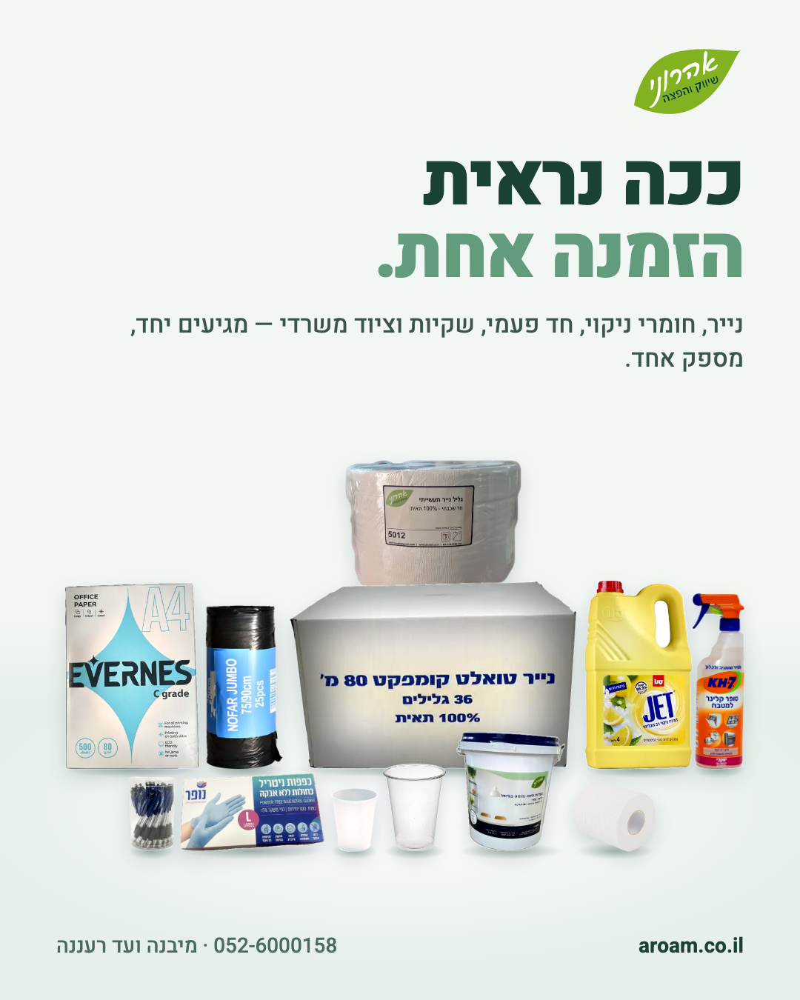
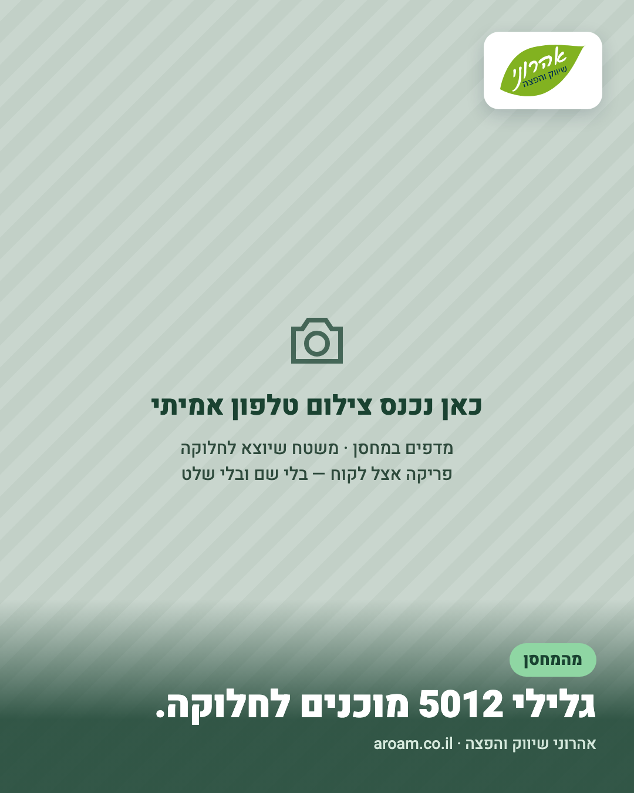
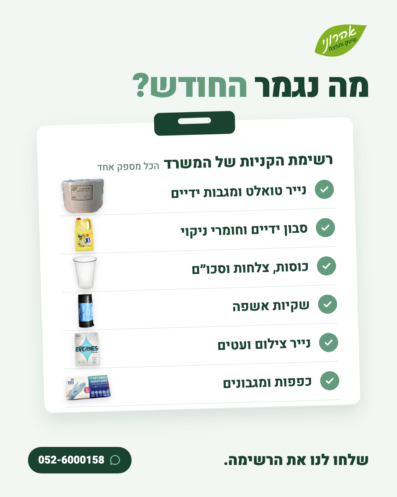

איך ספקים לעסקים בתחום שלנו מעצבים את המודעות ואת הפוסטים שלהם, ומה זה אומר על הפוסטים שנעלה לדף.
נבדק ב-23.10.2026: 16 חיפושים בספריית המודעות של מטא (ישראל, מודעות פעילות), כ-80 מודעות של ספקים רלוונטיים נבדקו לעומק, ו-5 דפי פייסבוק של מתחרים.
| מפרסם | מה מוכר | פונה אל | מה רואים במודעות | רצה מאז |
|---|---|---|---|---|
| מ.ר כלים | חד פעמי ואריזות ממותגות | מסעדות, ברים, בתי קפה | פוסטרים מעוצבים עם צילום "הלוגו שלך כאן", שורת אייקונים של יתרונות ופס הנעה לפעולה. סרטוני שף במטבח. 12 גרסאות במקביל. | 29.5.2026 |
| טווינס למסחר | חד פעמי, נייר, ניקיון | מסעדות ועסקי מזון | קרוסלה של כרטיסי מוצר: "ב-64 ₪ במקום 72 ₪", קוד קופון של 10%, גוש צבע שונה לכל מוצר. | 31.5.2026 |
| החיים הטובים | מוצרי צריכה, ניקיון, אריזות | בעלי מסעדות | סדרת כרטיסים זהים: מוצר על משטח נירוסטה, מחיר גדול בצהוב, פס לוגו וטלפון. | 22.9.2026 |
| מור פארמה | נייר תעשייתי וכפפות, יבואן | קליניקות, משרדים, מפעלים, מוסכים | ערימות גלילים מול המחסן: "כל סוגי הנייר התעשייתי תחת קורת גג אחת". הנעה לוואטסאפ. פותחת בבעיה: "כשנגמר הנייר באמצע יום עבודה". | 18.7.2026 |
| פעמית עסקים | חד פעמי וניקיון, מותג פרטי | עסקים ובתי מלון | קרוסלה שנפתחת במשפחת המוצרים וממשיכה למוצרים במקום השימוש: מתקן סבון מעל כיור, דלי מגבונים בחדר. | 19.10.2026 |
| שוהם | ניקיון ואספקה | עסקים, מוסדות, עיריות | לוח עם רשימת סימון (ציוד ניקיון, ציוד משרדי, שתייה) ומשפט אחד: "הכל במקום אחד". | 28.5.2026 |
| משרעדיקה | ציוד משרדי | משרדים | פלייר קמעונאי: אריחי מחיר, רכב חלוקה, "תוך 24 שעות", 10% הנחה, כפתור לאתר. | 22.10.2026 |
| סופר התאומים | ציוד משרדי ומוצרי סופר | מנהלי עסקים | עגלת קניות מלאה במוצרים ושלושה אייקונים של קטגוריות. | 23.7.2026 |
| נייר וקרטון הדרום | אריזות נייר וקרטון | סיטונאים, מסעדות, מאפיות | פלייר צהוב-שחור עם תבליטים, אייקונים וכפתור "לקבלת הצעת מחיר". גם סרטונים. | 22.9.2026 |
| ספקי שקיות ממותגות | שקיות ממותגות. שיווק העמק, Gallery BAG, עדן אריזות, אלירז שיווק, פרינס פרינט | כל עסק | סרטוני מדפים מהמחסן, צילומי שקיות שהודפסו ללקוחות, הבעלים מול המצלמה ("18 שנה ייצור"), "החל מ-279 ₪ ל-50 שקיות". | 13.7.2025 |
ספריית המודעות מציגה רק מודעות שרצות עכשיו. התאריך הוא של המודעה הוותיקה ביותר של המפרסם שמצאתי.
מוצר לכל כרטיס, מחיר גדול, מחיר קודם מחוק, קופון. עובד למי שמוכר באתר.
טווינס, החיים הטובים, משרעדיקה
לא בשבילנו: אנחנו לא מפרסמים מחיריםכל המוצרים יחד בסצנה אחת או ברשימה אחת, כותרת שפונה לקהל ("בעל מסעדה?"), שורת יתרונות ופס הנעה לפעולה.
מ.ר כלים, סופר התאומים, שוהם, פעמית עסקים
המסר שלנו. אצלם הוא למסעדות, למשרדים ולמפעלים הוא פנוימדפים במחסן, משטחים, ערימות קרטונים, הבעלים מדבר מול המצלמה. כמעט בלי עיצוב.
שיווק העמק, מור פארמה, אינדיגו, אלירז שיווק
הכי אמין והכי זול להפיק. צריך צילומים ממךהכותרת היא הבעיה, המוצר הוא הפתרון: "כשנגמר הנייר באמצע יום עבודה, העסק פשוט נעצר", "נתקעתם בלי ציוד?".
מור פארמה, משרעדיקה
מתאים, בלי הבטחות זמן כמו "תוך 24 שעות"מ.ר כלים מצלמים סלטים בקופסאות שלהם על רקע כחול קבוע ומשקאות בכוסות שלהם. כל הטקסט בכיתוב, שתי שורות. אלבום של 3 עד 5 תמונות.
מור פארמה: כפפה מחזיקה רימון לראש השנה, כפפות בצורת לב מעל מצה לפסח, כפפה שחורה עם מסכה לפורים. גם משרעדיקה וטווינס מעלים ברכה לכל חג.
משרעדיקה: "מבצע ראש השנה", "חזרה לבית הספר". טווינס: "10% הנחה על כל האתר".
משרעדיקה מצלמים ערימת חבילות נייר צילום, פעמית את קיר הלוגו באולם התצוגה, ומ.ר כלים מספרים על חסות לפודקאסט על מסעדנות.
טיוטות לבחירה, באותם צבעים ואותה טיפוגרפיה של המודעות, אבל במבנה אחר. עוד לא סט סופי.



ארבעת הפוסטים הראשונים בדף, במקום פוסט המותג ושלושת הפוסטים לפי קטגוריה:
אחרי זה, פוסט או שניים בשבוע, לסירוגין: צילום אמיתי, סצנה של מוצרים, רשימה לקהל אחר, וברכה לחג. החג הבא הוא חנוכה, 4 עד 12 בדצמבר 2026, עם המוצרים בתוך הברכה, כמו שמור פארמה עושה.
המודעות, תמונת השער ותמונת הפרופיל נשארים כמו שהם.
טלפון לאורך, אור יום, לנגב את העדשה, 3 עד 5 צילומים מכל דבר. בלי שמות של לקוחות ובלי שלטים שלהם.
חיפושים בספריית המודעות של מטא (ישראל, מודעות פעילות):
דפי הפייסבוק שנבדקו: מ.ר כלים, טווינס, פעמית עסקים, מור פארמה, משרעדיקה.